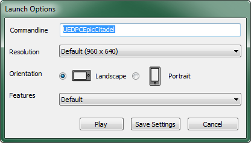
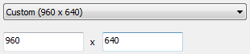
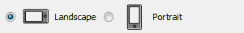
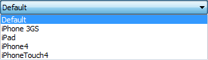

UDN
Search public documentation:
MobilePreviewerKR
English Translation
日本語訳
中国翻译
Interested in the Unreal Engine?
Visit the Unreal Technology site.
Looking for jobs and company info?
Check out the Epic games site.
Questions about support via UDN?
Contact the UDN Staff
日本語訳
中国翻译
Interested in the Unreal Engine?
Visit the Unreal Technology site.
Looking for jobs and company info?
Check out the Epic games site.
Questions about support via UDN?
Contact the UDN Staff
모바일 프리뷰어
개요
 모바일 프리뷰어를 통해, 모바일 디바이스의 렌더링과 매우 유사한 방식으로 동작하는 OpenGL ES2 렌더러를 사용하여 PC에서 게임을 시각화시켜 볼 수 있습니다. 게임을 시험해 보기 위해 디바이스에 배치하지 않고도 1:1에 가깝게 미리볼 수 있는 것입니다. 그래픽은 물론, 터치 콘트롤같은 기능까지 흉내내 볼 수 있습니다.
모바일 프리뷰어를 통해, 모바일 디바이스의 렌더링과 매우 유사한 방식으로 동작하는 OpenGL ES2 렌더러를 사용하여 PC에서 게임을 시각화시켜 볼 수 있습니다. 게임을 시험해 보기 위해 디바이스에 배치하지 않고도 1:1에 가깝게 미리볼 수 있는 것입니다. 그래픽은 물론, 터치 콘트롤같은 기능까지 흉내내 볼 수 있습니다.
모바일 프리뷰어 열어보기
에디터에서의 모바일 프리뷰어
모바일 프리뷰어에 레벨을 빠르게 불러올 수 있는 가장 쉬운 방법은, 에디터의 메인 툴바에 있는 /pub/Three/MobilePreviewer/toolbar_pip.png 버튼을 클릭하는 것입니다. 그러면 모바일 프리뷰어가 실행되며 현재 로딩된 맵을 플레이할 수 있습니다.에디터 프리뷰어 세팅
/pub/Three/MobilePreviewer/toolbar_pip.png 버튼에 우클릭 또는 /pub/Three/MobilePreviewer/toolbar_pip_settings.png 버튼을 클릭하면 모바일 프리뷰어 세팅 창이 뜹니다.
Commandline 명령줄 - 모바일 프리뷰어에 로드시킬 맵 이름입니다. (접두어 'UEDPC' 포함) 불러온 맵 이름과 일치해야 하며, 변경해서는 안됩니다. Resolution 해상도 - 미리지정된 옵션 중 하나로 모바일 프리뷰어 창의 해상도를 설정합니다.
| 옵션 | 해상도 | 설명 |
|---|---|---|
| Default | 960x640 | 모바일 프리뷰어 해상도를 960x640 으로 설정하고, Features 도 Default 로 설정합니다. |
| Custom | 설정가능 | 모바일 프리뷰어 해상도를 텍스트 필드에 입력한 값으로 설정하고, Features 는 Default 로 설정합니다.  |
| iPhone 3GS | 480x320 | 모바일 프리뷰어의 해상도를 480x320 으로 설정하고, Features 도 iPhone 3GS 로 설정합니다. |
| iPad | 1024x768 | 모바일 프리뷰어의 해상도를 1024x768 로 설정하고, Features 도 iPad 로 설정합니다. |
| iPhone4 | 960x640 | 모바일 프리뷰어의 해상도를 960x640 으로 설정하고, Features 도 iPhone4 로 설정합니다. |
| iPhoneTouch4 | 960x640 | 모바일 프리뷰어의 해상도를 960x640 으로 설정하고, Features 도 iPhoneTouch4 로 설정합니다. |
폭 x 높이 로 할지, 높이 x 폭 으로 할지를 정합니다.

| 옵션 | 설명 |
|---|---|
| Landscape | 가로보기. 해상도는 폭 x 높이 로 해석됩니다. |
| Portrait | 세로보기. 해상도는 높이 x 폭 으로 해석됩니다. |

독립형에서의 모바일 프리뷰어
게임을 실행시킬 때 명령줄에 'simmobile' 을 붙이면, 터치-기반 입력 이뮬레이션처럼 다른 모바일-관련 기능과 함께 ES2 렌더러도 활성화됩니다. 다른 기능 없이 ES2 렌더러만 필요한 경우, '-es2' 명령줄 인수를 주면 보통의 DirectX-기반 렌더링 대신 OpenGL ES2 RHI 가 활성화됩니다. 모바일 게임이 디바이스에서 실행될 때와 거의 똑같은 코드 패쓰를 사용하기에, 그래픽도 매우 유사해 보일 것입니다.프리뷰어와 디바이스간의 차이점
프리뷰어와 에디터간의 차이점
- 모바일 프리뷰어는 모바일 디바이스에서 실행시켜 보지 않고도 게임이 어때 보이는지를 조금 더 정확히 표현해 보고 싶을 때 사용합니다. 에디터는 모바일 디바이스가 사용하는 OpenGL ES2 렌더러가 아닌, Direct3D를 사용합니다. 그때문에, OpenGL 셰이더를 사용해야 하는 안개나 모바일 스페큘러같은 셰이딩 효과 일부는 표시되지 않습니다.
- 셰이더 복잡도, 와이어프레임, 라이팅제외, 라이팅망, 라이팅 디테일 등의 디버그 뷰 모드는 아직 모바일 프리뷰어에서 지원되지 않습니다. 이러한 기능을 사용하려면 "에디터에서 플레이" 또는 "PC에서 플레이"를 통해 게임을 실행시켜야 합니다. 모바일 프리뷰어는 에디터와 똑같은 셰이더를 사용하지는 않기에, 셰이더 복잡도 모드가 그리 정확하지 않을 수 있다는 점, 참고하시기 바랍니다.